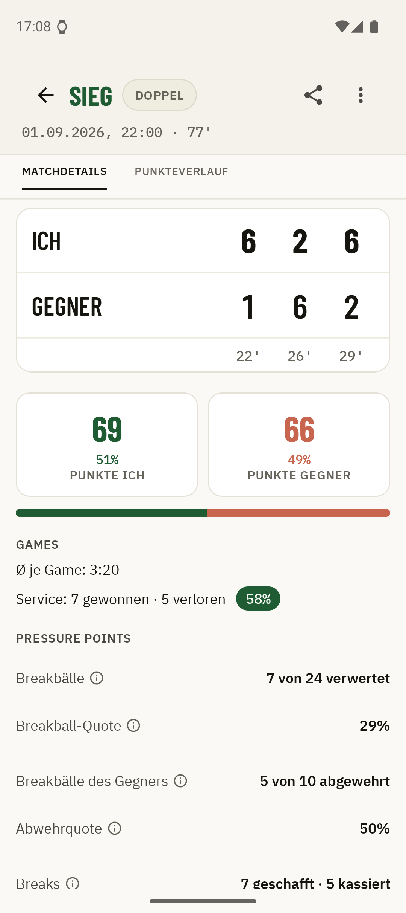
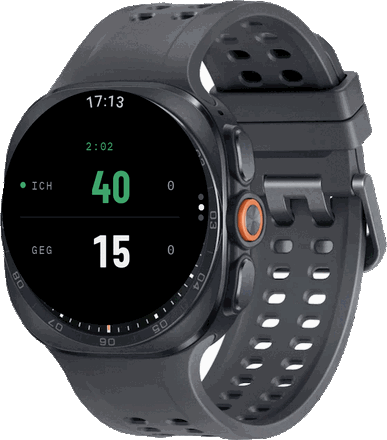

Ein Tipp pro Punkt auf der Uhr. Freunde schauen live zu. Nach dem Match wartet die ganze Auswertung auf dem Handy.
Warum Kortscore
Zählen darf nicht zum zweiten Gegner werden. Deshalb passiert am Platz so wenig wie möglich – und nach dem Match so viel wie du willst.
Kein Menü, kein Handy aus der Tasche, kein Blick weg vom Ball. Ein Tipp auf die Uhr zählt den Punkt, den Rest rechnet die App: Games, Sätze, Tiebreak, Aufschlagwechsel.
Ein Link genügt, und Familie und Freunde sehen jeden Punkt in Echtzeit im Browser – ohne App, ohne Konto, egal wo sie gerade sind.
Breakbälle, Druckpunkte, Servicespiele, Punkteverlauf, Spielzeiten: Nach dem Match liegt alles am Handy bereit, ohne dass du währenddessen etwas dafür tun musstest.
01 Während des Matches
Aufschlag. Die Uhr ist bereit, du musst nur noch spielen.
02 Auf dem gekoppelten Handy
Die Uhr zählt, dein eigenes gekoppeltes Handy zeigt mit. Über Bluetooth, ohne Internet. Perfekt, wenn am Zaun jemand mitschaut.
03 Für alle anderen
Vom Handy aus teilst du das laufende Match als Link. Familie und Freunde verfolgen den Spielstand in Echtzeit im Browser oder in der App, Punkt für Punkt. Ganz ohne eigenes Konto.

04 Nach dem Match
Jeder Punkt wird als Ereignis mitgeschrieben. Daraus wird mehr als ein Endergebnis: Breakbälle, Satz- und Matchbälle, Einstand-Games, längste Punkteserie – die Punkte, an denen das Match entschieden wurde.
Und über allen Matches steht die Gesamtstatistik: Siegquote, Form der letzten zehn Matches, Siegquoten-Trend, Bilanz nach Wochentag und Tageszeit – Einzel und Doppel getrennt.
05 Was die App kostet
Kortscore kostet nichts und zeigt keine Werbung – kein Banner, kein Werbe-SDK, für alle gleich. Wer tiefer graben will, holt sich Kortscore Plus: einmaliger Kauf, kein Abo.
| Funktion | Gratis | Plus |
|---|---|---|
| Keine Werbung | ||
| Punktestand über die Uhr eintragen | ||
| Unbegrenztes Match-Archiv | ||
| Ergebnis und Basis-Statistik jedes Matches | ||
| Live-Teilen: Link, Zuschauen, Punkteverlauf | ||
| Manuelles Backup und Wiederherstellen | ||
| Ausführliche Statistiken Pressure Points, Uhren-Akku, Punkteverlauf-Chart | ||
| Matchverlauf Satz für Satz, Spiel für Spiel | ||
| Auto-Backup sichert das Archiv unbeaufsichtigt |
Plus ist ein einmaliger Kauf, kein Abo – er gilt dauerhaft, nach einer Neuinstallation stellt ihn die App still wieder her. Das Ergebnis deines eigenen Matches verkaufen wir dir nicht zurück, und dich vor Datenverlust zu schützen kostet nie Geld: Plus kauft nur die Bequemlichkeit, dass das Backup von allein passiert.
06 Datenschutz
Kostenlos & werbefrei
Kortscore kostet nichts, zeigt keine Werbung und braucht kein Konto. Installieren, Uhr koppeln, zählen. Deine Freunde und deine Familie brauchen weder Uhr noch App: zum Mitschauen genügt der Link im Browser.

Öffnet den Play Store. Fragen vor dem Installieren? swordistudios@gmail.com